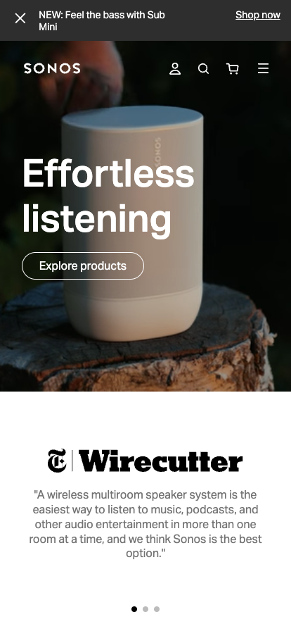
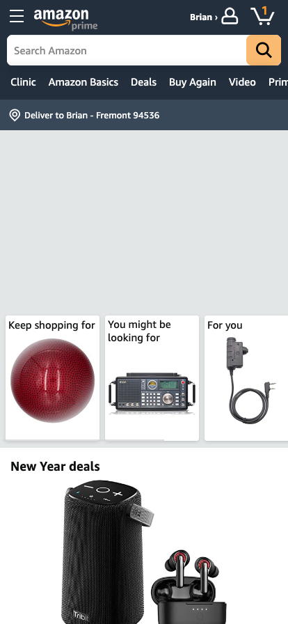

Hick's Law
DuckDuckGo
duckduckgo.comDuckDuckGo's mobile website exemplifies Hick's Law because it has an absolute minimum number of choices for a user to select from: search. The site has that one purpose and hides any options or infrequently used options in a burger menu.
White Space and Clean Design
Sonos
sonos.com Sonos has created a minimalist landing page that utilizes copious white space, figuratively and literally. The page only has a few elements separated by oceans of nothing.
Fitt's Law
Amazon.com
amazon.com Fitts' law can be distilled into the idea that interactive elements should be big and point-blank. By presenting a limited number of large options to click and keeping them close together, Amazon.com allows users, especially those on mobile devices, to quickly select items for purchase.